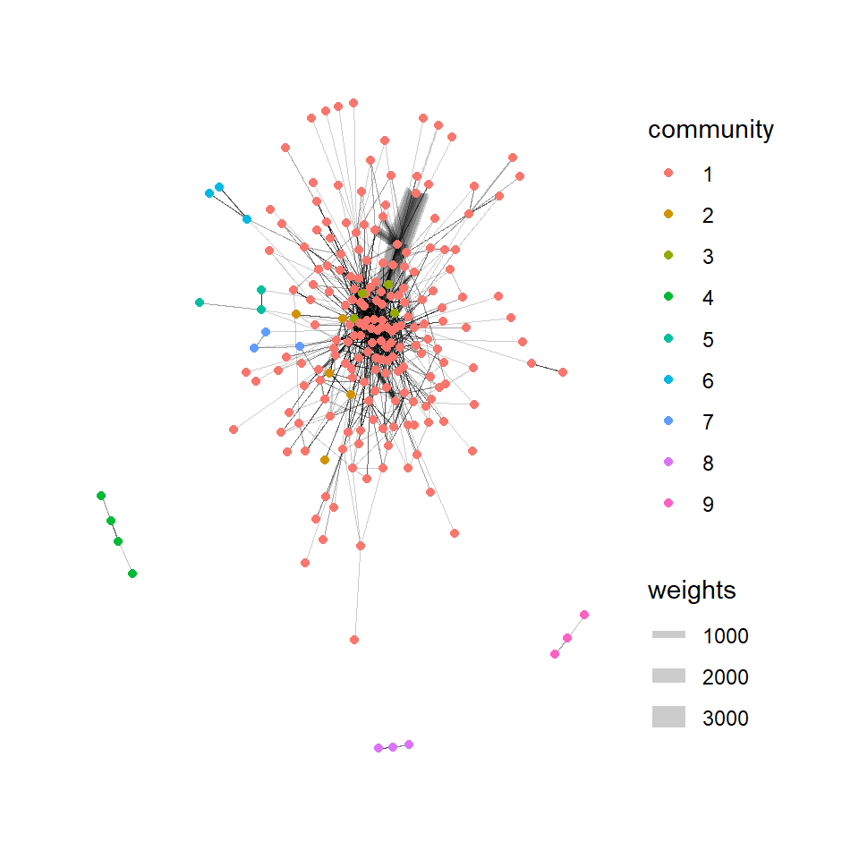

pacman::p_load(jsonlite,tidygraph,ggraph,visNetwork,tidyverse,lubridate,igraph,plotly,treemap)Take Home_Ex02
1. Background
The country of Oceanus has sought FishEye International’s help in identifying companies possibly engaged in illegal, unreported, and unregulated (IUU) fishing. As part of the collaboration, FishEye’s analysts received import/export data for Oceanus’ marine and fishing industries.
With reference to Mini-Challenge 2 of VAST Challenge 2023 and by using appropriate static and interactive statistical graphics methods, we will be helping FishEye to identify companies that may be engaged in illegal fishing.
2. Data Source
The data is taken from the Mini-Challenge 2 of VAST Challenge 2023. mc2_challenge_graph.json file will be used for the purpose of this exercise.
3. Data Preparation
3.1 Install and launching R packages
The code chunk below uses p_load() of pacman package to check if packages are installed in the computer. If they are, then they will be launched into R. The R packages installed are:
3.2 Loading the Data
fromJSON() of jsonlite package is used to import mc2_challenge_graph.json into R environment.
MC2 <- fromJSON("data/mc2_challenge_graph.json")3.3 Data Wrangling
3.3.1 Extracting the nodes
The code chunk is used to extract nodes data table from mc2_data list object and save the output in a tibble data frame object called mc2_nodes.
#Extract id, shpcountry and rcvcountry and make it as a tibble database. use select to choose the fields you want and reorganise the fields as you want
MC2_nodes <- as_tibble(MC2$nodes) %>%
select(id, shpcountry, rcvcountry)
head(MC2_nodes)# A tibble: 6 × 3
id shpcountry rcvcountry
<chr> <chr> <chr>
1 AquaDelight Inc and Son's Polarinda Oceanus
2 BaringoAmerica Marine Ges.m.b.H. <NA> <NA>
3 Yu gan Sea spray GmbH Industrial Oceanus Oceanus
4 FlounderLeska Marine BV <NA> <NA>
5 Olas del Mar Worldwide Oceanus Oceanus
6 French Crab S.p.A. Worldwide Kondanovia Utoporiana
Things to learn
select() is used not only to select the field needed but also to re-organise the sequence of the fields.
3.3.2 Extracting the edges
The code chunk is used to extract edges data table from mc2_data list object and save the output in a tibble data frame object called mc2_edges.
MC2_edges <- as_tibble(MC2$links) %>%
select(source, target, arrivaldate, hscode, valueofgoods_omu, valueofgoodsusd, volumeteu, weightkg)3.3.3 Reviewing the imported data
Next, we will examine the structure of the data frame using glimpse() of dplyr.
glimpse(MC2_nodes)Rows: 34,576
Columns: 3
$ id <chr> "AquaDelight Inc and Son's", "BaringoAmerica Marine Ges.m.b…
$ shpcountry <chr> "Polarinda", NA, "Oceanus", NA, "Oceanus", "Kondanovia", NA…
$ rcvcountry <chr> "Oceanus", NA, "Oceanus", NA, "Oceanus", "Utoporiana", NA, …glimpse(MC2_edges)Rows: 5,464,378
Columns: 8
$ source <chr> "AquaDelight Inc and Son's", "AquaDelight Inc and Son…
$ target <chr> "BaringoAmerica Marine Ges.m.b.H.", "BaringoAmerica M…
$ arrivaldate <chr> "2034-02-12", "2034-03-13", "2028-02-07", "2028-02-23…
$ hscode <chr> "630630", "630630", "470710", "470710", "470710", "47…
$ valueofgoods_omu <dbl> 141015, 141015, NA, NA, NA, NA, NA, NA, NA, NA, NA, N…
$ valueofgoodsusd <dbl> NA, NA, NA, NA, NA, NA, 87110, 188140, NA, 221110, 58…
$ volumeteu <dbl> 0, 0, 0, 0, 0, 0, 0, 0, 0, 0, 0, 0, 0, 0, 0, 0, 0, 0,…
$ weightkg <int> 4780, 6125, 10855, 11250, 11165, 11290, 9000, 19490, …
Warning
The output report of MC2_edges above reveals that the arrivaldate is treated as
3.3.4 Wrangling Time
MC2_edges <- MC2_edges %>%
mutate(ArrivalDate = ymd(arrivaldate)) %>%
mutate(Year = year(ArrivalDate)) %>%
mutate(Month = month(ArrivalDate)) %>%
mutate(Monthyear = paste(Year, Month, sep = "-")) %>%
select(source, target, ArrivalDate, Month, Year, hscode, valueofgoods_omu, volumeteu, weightkg, valueofgoodsusd) %>%
distinct()
head(MC2_edges)# A tibble: 6 × 10
source target ArrivalDate Month Year hscode valueofgoods_omu volumeteu
<chr> <chr> <date> <dbl> <dbl> <chr> <dbl> <dbl>
1 AquaDelight … Barin… 2034-02-12 2 2034 630630 141015 0
2 AquaDelight … Barin… 2034-03-13 3 2034 630630 141015 0
3 AquaDelight … -15045 2028-02-07 2 2028 470710 NA 0
4 AquaDelight … -15045 2028-02-23 2 2028 470710 NA 0
5 AquaDelight … -15045 2028-09-11 9 2028 470710 NA 0
6 AquaDelight … -15045 2028-10-09 10 2028 470710 NA 0
# ℹ 2 more variables: weightkg <int>, valueofgoodsusd <dbl>
Things to learn
mutate()is used 4 times to create 4 derive fields.ymd()of lubridate package is used to covert arrivaldate field from character data type into date data type.year()of lubridate package is used to convert the values in ArrivalDate field into year values.month() of lubridate package is used to convert the values in ArrivalDate field into month values.
select()is used not only to select the field needed but also to re-organise the sequent of the fields.
3.3.5 Checking if there is any missing values in the edge data table
The below chunck is used to calculate the percentage of NAs and 0s in the each column in the edge data table to see if we should use it for our analysis.
# Select specific columns in your dataset
selected_columns <- c("valueofgoods_omu", "volumeteu", "weightkg", "valueofgoodsusd")
## Calculate the percentage of NA values and zeros for the selected columns
total_rows <- nrow(MC2_edges)
na_percentage <- colSums(is.na(MC2_edges[, selected_columns])) / total_rows * 100
zero_percentage <- colSums(MC2_edges[, selected_columns] == 0, na.rm = TRUE) / total_rows * 100
# Combine the results into a data frame
result <- data.frame(NA_Percentage = na_percentage, Zero_Percentage = zero_percentage)
# Display the result
result NA_Percentage Zero_Percentage
valueofgoods_omu 99.99471 0.00000000
volumeteu 9.38167 75.91084870
weightkg 0.00000 0.90128491
valueofgoodsusd 54.36443 0.08169013
Warning
There is a high percentage of NA value in valueofgoods_omu and valueofgoodusd and a high percentage of zero in volumeteu, thus we will leave them out in our analysis, since we are unable to derive any useful insights.
3.3.6 Preparing the edges data table
Harmonized System (HS) codes are the identification codes given to goods for use in international trade. The HS codes are administered by the World Customs Organization (WCO) and are internationally accepted for use by customs authorities and companies to identify goods.
Since we are doing an analysis on the fishing industry, we have to first filter those hscodes that are fishing industry related products.
mc2_edges_aggregated <- MC2_edges %>%
filter(grepl("^30[1-8]|^2301|^160[4-5]|^1212|^1302|^1504|^151610|^151790", hscode)) %>% # filter out only those hscode that are fishing industry related products
group_by(source, target, hscode, Year) %>%
summarise(weights = n(), median_weight = median(weightkg)) %>%
filter(source!=target) %>%
filter(weights>10) %>%
ungroup()
mc2_edges_aggregated# A tibble: 12,408 × 6
source target hscode Year weights median_weight
<chr> <chr> <chr> <dbl> <int> <dbl>
1 " Direct Herring Company Transit" Estre… 306170 2031 12 21078.
2 "1 Limited Liability Company" Olas … 303630 2034 28 19830
3 "1 Limited Liability Company Trans… Selou… 160414 2030 12 9985
4 "1 Limited Liability Company Trans… Selou… 160414 2031 21 8815
5 "1 Limited Liability Company Trans… Selou… 160414 2032 16 6908.
6 "1 Limited Liability Company Trans… Selou… 160414 2033 54 6922.
7 "1 Limited Liability Company Trans… Selou… 160414 2034 28 6545
8 "1 Ltd. Liability Co Cargo" Himac… 306170 2028 68 10095
9 "1 Ltd. Liability Co Cargo" Himac… 306170 2029 59 19205
10 "1 Ltd. Liability Co Cargo" Himac… 306170 2030 26 17708.
# ℹ 12,398 more rowsNext, we take a look at what are the top fishing related products that has most transactions.
top_3_hscode <- mc2_edges_aggregated %>%
group_by(hscode) %>%
summarise(total_weights = sum(weights)) %>%
arrange(desc(total_weights)) %>%
slice_head(n = 3)
top_3_hscode# A tibble: 3 × 2
hscode total_weights
<chr> <int>
1 306170 122910
2 304620 81075
3 160414 63745The top 3 hscodes that has most number of transactions are ‘306170’,‘304620’ and ‘160414’. Thus, we will focus our analysis based on these 3 hscodes.
#Filter the mc2_edges_aggregated based on the top 3 hscode
mc2_edges_aggregated_top <- mc2_edges_aggregated %>%
filter(hscode == "306170"| hscode == "304620"| hscode == "160414")
#mc2_edges_aggregated_top
Things to learn
filter()is used to select records whereby hscode that fishing industry related products. The selection of hscode is referenced from the link heregroup_by()is used to aggregate values by source, target, hscode, Year.summarise()andn()are used to count the aggregated records.filter() is then used to perform the below selection,
- to select all records whereby source are not equal to target
3.3.7 Preparing the nodes data table
Instead of using the nodes data table extracted from mc2_data, we will prepare a new nodes data table by using the source and target fields of mc2_edges_aggregated data table. This is necessary to ensure that the nodes in nodes data tables include all the source and target values. Then we will reference to the MC2_nodes table to get the corresponding shpcountry and rcvcountry values.
id1_aggregated <- mc2_edges_aggregated_top %>%
select(source) %>%
rename(id = source)
id2_aggregated <- mc2_edges_aggregated_top %>%
select(target) %>%
rename(id = target)
mc2_nodes_extracted_aggregated <- rbind(id1_aggregated, id2_aggregated) %>%
distinct()
# Join with MC2_nodes by 'id to get the 'shpcountry', and 'rcvcountry'
mc2_nodes_extracted_aggregated <- mc2_nodes_extracted_aggregated %>%
left_join(MC2_nodes, by = "id")
head(mc2_nodes_extracted_aggregated)# A tibble: 6 × 3
id shpcountry rcvcountry
<chr> <chr> <chr>
1 " Direct Herring Company Transit" Mawazam Coralmarica
2 "1 Limited Liability Company Transport" Kondanovia Oceanus
3 "1 Ltd. Liability Co Cargo" Mawandia <NA>
4 "6 Ltd. Liability Co Transportation" Marebak Oceanus
5 "8 Aquamarine Limited Liability Company Holdings" Marebak Oceanus
6 "9 Marine biology Ltd Family" Mawazam <NA> 3.3.8 Building the tidygraph model
The code chunk below is then used to build the tidy graph data model.
mc2_graph <- tbl_graph(nodes = mc2_nodes_extracted_aggregated,
edges = mc2_edges_aggregated_top,
directed = TRUE)
mc2_graph# A tbl_graph: 930 nodes and 4670 edges
#
# A directed acyclic multigraph with 27 components
#
# A tibble: 930 × 3
id shpcountry rcvcountry
<chr> <chr> <chr>
1 " Direct Herring Company Transit" Mawazam Coralmarica
2 "1 Limited Liability Company Transport" Kondanovia Oceanus
3 "1 Ltd. Liability Co Cargo" Mawandia <NA>
4 "6 Ltd. Liability Co Transportation" Marebak Oceanus
5 "8 Aquamarine Limited Liability Company Holdings" Marebak Oceanus
6 "9 Marine biology Ltd Family" Mawazam <NA>
# ℹ 924 more rows
#
# A tibble: 4,670 × 6
from to hscode Year weights median_weight
<int> <int> <chr> <dbl> <int> <dbl>
1 1 543 306170 2031 12 21078.
2 2 544 160414 2030 12 9985
3 2 544 160414 2031 21 8815
# ℹ 4,667 more rows4. Network Metrics Analysis
4.1 Calulating the in, out and total degree centrality of the nodes
Degree centrality is a measure of immediate connection in a network. It could be interpreted as immediate reach in a social network.
We will calculate the in and out degree centrality of the nodes, and create 2 new columns to store these scores.
# A tbl_graph: 930 nodes and 4670 edges
#
# A directed acyclic multigraph with 27 components
#
# A tibble: 930 × 6
id shpcountry rcvcountry in_degree_centrality out_degree_centrality
<chr> <chr> <chr> <dbl> <dbl>
1 Mar del Este… Merigrad Oceanus 400 0
2 Caracola del… Puerto Sol Oceanus 363 0
3 hǎi dǎn Corp… Marebak Oceanus 337 0
4 Costa de la … Alverossia Oceanus 181 0
5 Selous Game … Isliandor Oceanus 153 0
6 Pao gan SE S… Alverossia Oceanus 150 0
# ℹ 924 more rows
# ℹ 1 more variable: degree_centrality <dbl>
#
# A tibble: 4,670 × 6
from to hscode Year weights median_weight
<int> <int> <chr> <dbl> <int> <dbl>
1 402 48 306170 2031 12 21078.
2 403 5 160414 2030 12 9985
3 403 5 160414 2031 21 8815
# ℹ 4,667 more rows
Things to learn
activate() is used to make the nodes of mc2_graph active to calculate the degree centrality.
mutate() function from the dplyr package is used to add two new columns, in_degree_centrality and out_degree_centrality, to the nodes of the mc2_graph object
4.2 Determining the type of entity the id belongs to
Number of vessels: 529 Number of transshipment: 388 Number of vessels/transshipment: 13 After cleaning up the data, we have a total of 29 vessels, 21 transshipment and 74 companies that may be either a vessel or transshipment to work with for our analysis.
Note
If in_degree_centrality == 0, it means that the company is most likely a pure exporter and highly likely a carrier or vessel.
If out_degree_centrality == 0, it means that the company is most likely a pure importer and highly likely involved in transhipment.
If in_degree_centrality > 0 & out_degree_centrality > 0, the company is most likely both a vessel or transhipment.
4.3 Community Detection Analysis
Next, we will use the group_edge_betweenness function. It works by iteratively removing the edges with the highest betweenness centrality, which is a measure of the number of shortest paths that pass through an edge. By removing these edges, the graph is divided into clusters or communities.

As seen from the community detection graph above, there is only 1 community, community 1, that meet the criteria of community size >2. The node who has the highest in-degree centrality value is Mar del Este CJSC. Below is the code chunck use to find out the who is the transshipment leader for each community.
# A tbl_graph: 707 nodes and 778 edges
#
# A directed acyclic multigraph with 313 components
#
# A tibble: 707 × 2
id community
<chr> <fct>
1 Mar del Este CJSC 1
2 Orange River Incorporated Shipping 27
3 Brisa del Este BV 10
4 Lake Turkana Charter Boat NV Marine 28
5 Himachal Pradesh BV Holdings 11
6 hǎi dǎn AG Express 29
# ℹ 701 more rows
#
# A tibble: 778 × 6
from to hscode Year weights median_weight
<int> <int> <chr> <dbl> <int> <dbl>
1 308 15 160414 2028 12 19808.
2 308 179 160414 2028 13 17015
3 311 1 306170 2034 16 19452.
# ℹ 775 more rowsNext, we will further investigate community 1 by plotting its network graph over the years from 2028-2034 to see if we can find any insights.
5. References
https://ona-book.org/vertex-importance.html https://smu-my.sharepoint.com/personal/tskam_smu_edu_sg/Documents/VAST%20Challenge%202023/References/Network%20Analysis%20and%20Visualisation/Identifying%20Central%20Carriers%20and%20Detecting%20Key%20Communities%20Within%20the%20Global%20Fish%20Transshipment%20Networks.pdf https://datastorm-open.github.io/visNetwork/edges.html